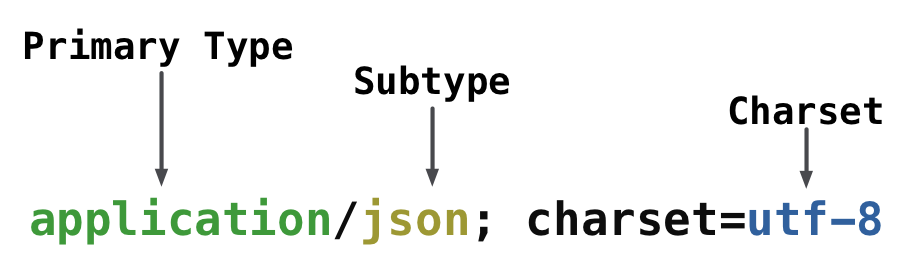

Request and Response Objects
In Aqueduct, HTTP requests and responses are instances of Request and Response, respectively. For every HTTP request an application receives, an instance of Request is created. A Response must be created for each Request. Requests pass through a channel of RequestControllers to be validated, modified and finally responded to.
The Request Object
An instance of Request represents an HTTP request. They are automatically created when the application receives a request and are delivered to your application's RequestSink. A Request is a wrapper around the Dart standard library HttpRequest and its values - such as headers - can be accessed through its innerRequest. (Just don't write to its response - Aqueduct does that.)
A Request has a body property. This property decodes the HTTP request body into Dart objects based on the request's content type. The mechanism to decode the body is determined by HTTPCodecRepository, which is covered in more detail in a later section. By default, decoders exist for text, JSON and form data.
A Request may go through many RequestControllers before it is finally responded to. These RequestControllers may validate or add more information to the request as it passes through. For example, an Authorizer - a subclass of RequestController - will validate the Authorization header of a request. Once validated, it will add authorization info to the request - like the user for an OAuth 2.0 bearer token - and pass it to the next RequestController. The next controller in the channel has access to the authorization info without having to fetch the information again.
These additional values are added to a Request's attachments property. A Request also has two built-in attachments, authorization and path. authorization contains authorization information created by an Authorizer and path has request path information created by a Router.
Requests are responded to by returning an instance of Response from a RequestController (see RequestControllers).
Response Objects and HTTP Body Encoding
An instance of Response has a status code, HTTP headers and an HTTP body. There are a number of convenience constructors for Response for commonly used status codes. For example, Response.ok creates a 200 OK status code response.
var response = new Response.ok({"key": "value"});
When a Response is returned from a request controller, Aqueduct handles sending the HTTP response back to the client.
An HTTP response often contains a body. For example, the body in response to GET /users/1 might be JSON object that represents a user. To ensure the client understands that the body is a JSON object, it includes the header Content-Type: application/json; charset=utf-8.
When creating a Response that has a body, you provide a body object and a contentType. The body object is passed to one of Response's constructors. For example, this map` is the body object of a response:
var map = {"key": "value"}; // ContentType.JSON is the default, setting it may be omitted. // ContentType.JSON == `application/json; charset=utf-8' var response = new Response.ok(map) ..contentType = ContentType.JSON;
Body objects are encoded according to their content-type. In the above, map is first encoded as a JSON string and then to a list of UTF8 bytes.

A ContentType is made up of three components: a primary type, a subtype and an optional character set.

The primary and subtype determine the first conversion step and the charset determines the next. Each step is performed by an instance of Codec. For example, the content type application/json selects JsonCodec, while charset utf-8 selects Utf8Codec. These two codecs are run in succession to convert the Map to a list of bytes.
The body object must be a valid input for the initial encoder step. In the above example, a Map<String, dynamic> can be encoded by a JsonCodec. But if the body object was something silly - like an Isolate - encoding would fail at runtime and the client would be sent a 500 Server Error response. A valid input for one Codec may not be valid for another; it is up to you to ensure that the body object is valid for the contentType of the response.
Not all content types require two conversion steps. For example, when serving an HTML file, the body object is already an HTML String. It will only be converted by a charset encoder:
var html = "<html></html>"; var response = new Response.ok(html) ..contentType = ContentType.HTML;
And an image body object needs no conversion at all, since it is already a list of bytes:
var imageFile = new File("image.jpg"); var imageBytes = await imageFile.readAsBytes(); var response = new Response.ok(imageBytes) ..contentType = new ContentType("image", "jpeg");
See a later section for more details on content type to codec mappings. Also, see the documentation for HTTPCodecRepository for details on built-in codecs and adding codecs.
Streaming Response Bodies
A body object may also be a Stream<T>. Stream<T> body objects are most often used when serving files. This allows the contents of the file to be streamed from disk to the HTTP client without having to load the whole file into memory first. (See also HTTPFileController.)
var imageFile = new File("image.jpg"); var imageByteStream = imageFile.openRead(); var response = new Response.ok(imageByteStream) ..contentType = new ContentType("image", "jpeg");
When a body object is a Stream<T>, the response will not be sent until the stream is closed. For finite streams - like those from opened filed - this happens as soon as the entire file is read. For streams that you construct yourself, you must close the stream some time after the response has been returned.
Custom Objects
Any object may be the body object of a Response if it implements HTTPSerializable. An object conforming to this type must implement asMap(), which gets invoked on the body object prior to it being sent to the first encoding step. For example, the following object can be used as a body object and is automatically converted into a Map and then JSON encoded:
class Person implements HTTPSerializable { String name; String email; Map<String, dynamic> asMap() { return { "name": name, "email": email }; } ... } var person = new Person(); var response = new Response.ok(person);
ManagedObject<T>, part of the Aqueduct ORM, implements HTTPSerializable so results from Query<T> may be body objects:
var query = new Query<Person>()..where.id = whereEqualTo(1); var person = await query.fetchOne(); var response = new Response.ok(person); // or List<Serializable> var query = new Query<Person>(); var people = await query.fetch(); var response = new Response.ok(people);
Note that a Map itself is not HTTPSerializable and can't have HTTPSerializable values. For example, the following wouldn't work:
var map = { "person": new Person() }; var response = new Response.ok(map);
The entire flow of a body object is shown in the following diagram. Each orange item is an allowed body object type and shows the steps it will go through when being encoded to the HTTP response body. For example, a HTTPSerializable goes through three steps, whereas a List<int> goes through zero steps and is added as-is to the HTTP response.

Codecs and Content Types
In the above sections, we glossed over how a codec gets selected when preparing the response body. The common case of ManagedObject<T> body objects that are sent as UTF8 encoded JSON 'just works' and is suitable for most applications. When serving assets for a web application or different data formats like XML, it becomes important to understand how Aqueduct's codec repository works.
HTTPCodecRepository contains mappings from content types to Codecs. These codecs encode response bodies and decode request bodies. There are three built-in codecs for application/json, application/x-www-form-urlencoded and text/*. When a response is being sent, the repository is searched for an entry that exactly matches the primary and subtype of the Response.contentType. If an entry exists, the associated Codec starts the conversion. For example, if the content type is application/json; charset=utf-8, the built-in application/json codec encodes the body object. The character set is not evaluated at this stage.
If there isn't an exact match, but there is an entry for the primary type with the wildcard (*) subtype, that codec is used. For example, the built-in codec for text/* will be selected for both text/plain and text/html. If there was something special that had to be done for text/html, a more specific codec may be added for that type:
class MySink extends RequestSink { MySink(ApplicationConfiguration config) : super(config) { HTTPCodecRepository.defaultInstance.add(new ContentType("application", "html"), new HTMLCodec()); } }
Content type to codec mappings are added in the constructor of an application's RequestSink. The codec must implement Codec from dart:convert. In the above example, when a response's content type is text/html, the HTMLCodec will encode the body object. This codec takes precedence over text/* because it is more specific.
When selecting a codec for a response body, the ContentType.charset doesn't impact which codec is selected. For example, the following two lines are equivalent:
HTTPCodecRepository.defaultInstance.add(new ContentType("application", "html"), new HTMLCodec()); HTTPCodecRepository.defaultInstance.add(new ContentType("application", "html", charset: "utf-8"), new HTMLCodec());
If a response's content-type has a charset, then a charset encoder like UTF8 will be applied as a last encoding step. For example, a response with content-type application/json; charset=utf-8 will encode the body object as a JSON string, which is then encoded as a list of UTF8 bytes. It is required that a response body's eventually encoded type is a list of bytes, so it follows that a codec that produces a string must have a charset.
If there is no codec in the repository for the content type of a Response, the body object must be a List<int> or Stream<List<int>>. If you find yourself converting data prior to setting it as a body object, it may make sense to add your own codec to HTTPCodecRepository.
A request's body, on the other hand, always starts as a list of bytes. To decode a JSON request body, it first must be decoded from the list of UTF8 bytes into a string. It is possible that a client could omit the charset in its content-type header. Codecs added to HTTPCodecRepository may specify a default charset to interpret a charset-less content-type. When a codec is added to the repository, if content-type's charset is non-null, that is the default. For example, the JSON codec is added like this:
HTTPCodecRepository.defaultInstance.add( new ContentType("application", "json", charset: "utf-8"), const JsonCodec(), allowCompression: true);
If the charset is null, no charset decoding occurs on a request body if one doesn't exist. Content-types that are decoded from a String should not use a default charset because the repository would always attempt to decode the body as a string first.
Compression with gzip
Body objects may be compressed with gzip if the HTTP client allows it and the HTTPCodecRepository has been configured to compress the content type of the response. The three built-in codecs - application/json, application/x-www-form-urlencoded and text/* - are all configured to allow compression. Compression occurs as the last step of conversion and only if the HTTP client sends the Accept-Encoding: gzip header.
Content types that are not in the codec repository will not trigger compression, even if the HTTP client allows compression with the Accept-Encoding header. This is to prevent binary contents like images from being 'compressed', since they are likely already compressed by a content-specific algorithm. In order for Aqueduct to compress a content type other than the built-in types, you may add a codec to the repository with the allowCompression flag. (The default value is true.)
MySink(ApplicationConfiguration config) : super(config) { HTTPCodecRepository.add( new ContentType("application", "x-special"), new MyCodec(), allowCompression: true); }
You may also set whether or not a content type uses compression without having to specify a codec if no conversion step needs to occur:
HTTPCodecRepository.setAllowsCompression(new ContentType("application", "x-special"), true);